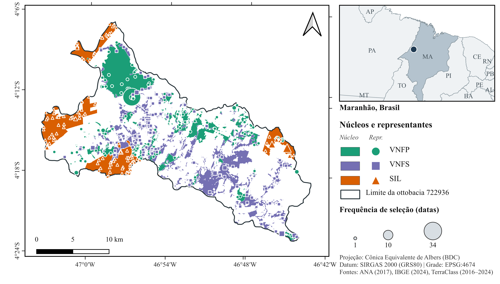
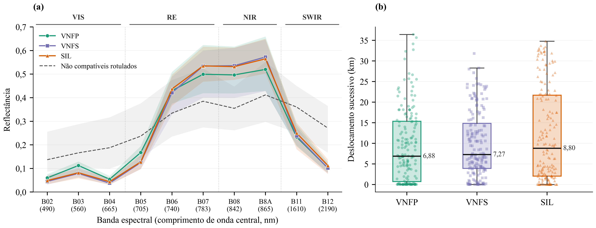
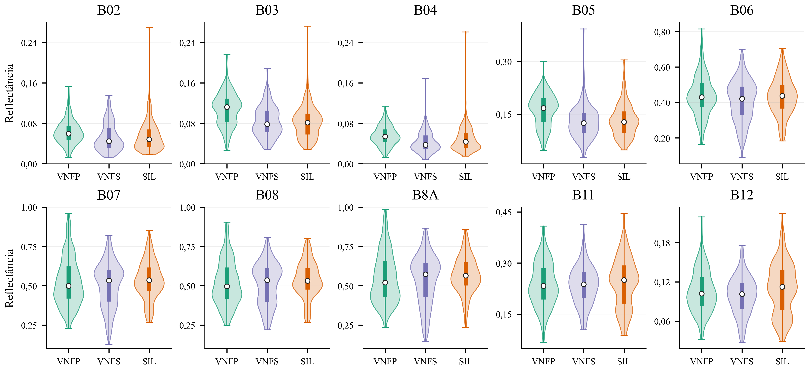
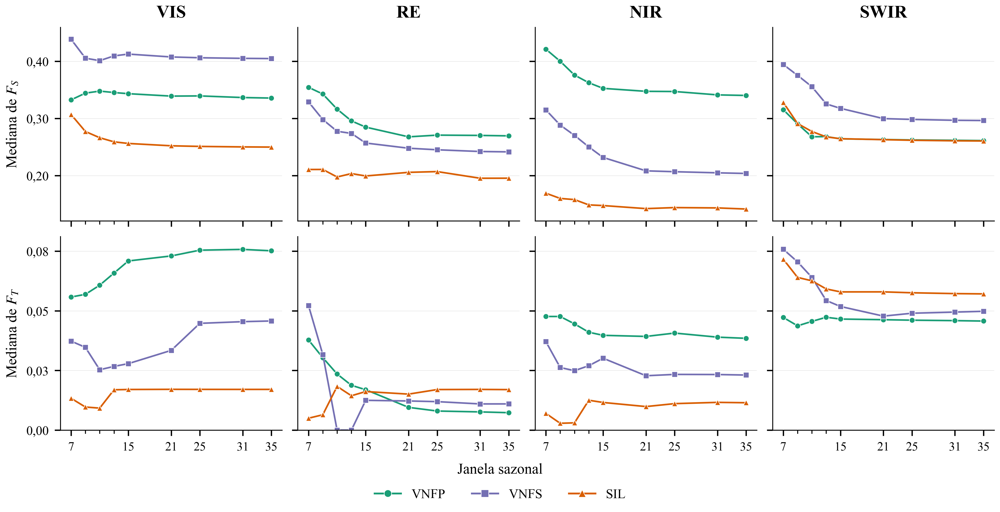
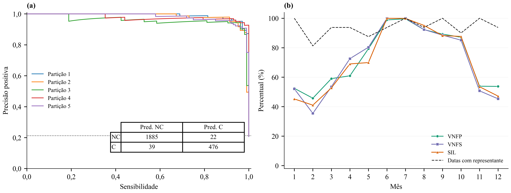
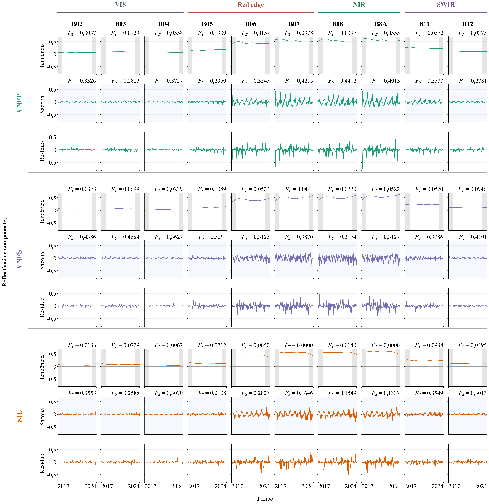

Figura 1 — Mapa da bacia, núcleos e representantes

4488 × 2551 px; 19.0 × 10.8 cm a 600 dpi.VNFP #1B9E77 círculo; VNFS #7570B3 quadrado; SIL #D95F02 triângulo.
PNGs exportados diretamente a 600 dpi; SVGs com texto convertido em traçados; PDFs vetoriais com fontes incorporadas. Para composição final, prefira os arquivos vetoriais.
Conjunto em PDF · Projeto QGIS · Dimensões e hashes

4488 × 2551 px; 19.0 × 10.8 cm a 600 dpi.
5109 × 1959 px; 21.6 × 8.3 cm a 600 dpi.
5109 × 2349 px; 21.6 × 9.9 cm a 600 dpi.
5049 × 2589 px; 21.4 × 11.0 cm a 600 dpi.
5409 × 2049 px; 22.9 × 8.7 cm a 600 dpi.
6613 × 6807 px; 28.0 × 28.8 cm a 600 dpi.As camadas vetoriais usam SIRGAS 2000 (EPSG:4674). A bacia é identificada como ANA/BHO 2017. O ano IBGE 2024 provém do nome da camada de origem; não foi confirmado por metadados externos.